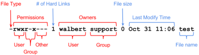

# Linux - Permissions - File Permissions
Files have different permissions or file modes.
$ ls -l Desktop/
drwxr-xr-x 2 pete penguins 4096 Dec 1 11:45 .## Permissions
r = read
w = write
x = execute
- = empty
## File Permissions
There are 4 parts to a file's permissions.
d | rwx | r-x | r-x 1. File type
◇
d = directory
◇
- = regular file
2. Owner (user) permissions
3. Group permissions
4. Other users' permissions
file type | owner perms | group perms | other's perms